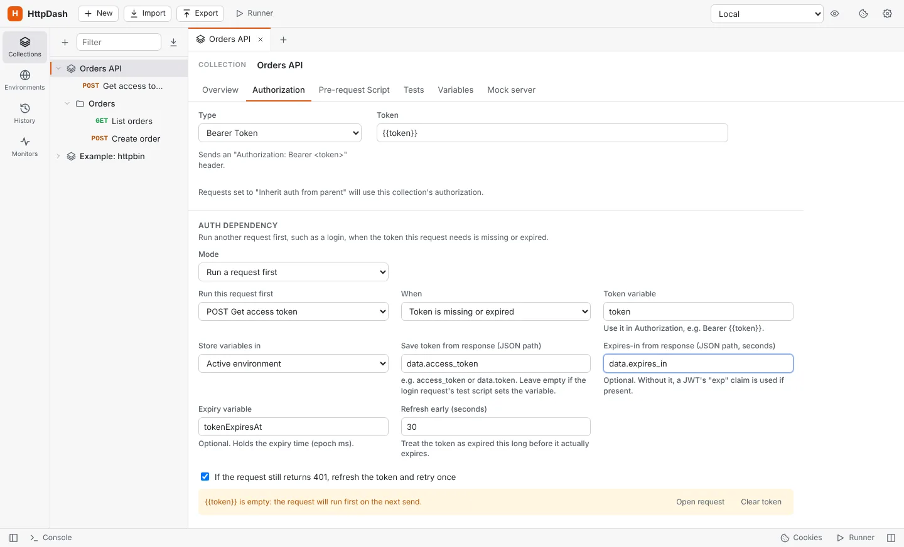

Tokens that refresh themselves
Point a collection at its login request once. Before every call, HttpDash checks the token: if it's missing or about to expire, it runs the login first, saves the new token, and sends your request. If a server still answers 401, it refreshes and retries.
- Reads the token from any JSON path, such as
data.jwToken - Knows when a JWT expires, or uses
expires_in - Works the same in the runner, monitors and the CLI
